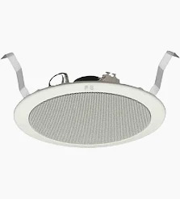

ZS-648R · 12cmTOA / ZS-648R
ZS-648R
Speaker plafon cone-type 12cm (5"), cocok untuk ruangan berukuran sedang seperti kantor, ritel, dan koridor.
12cm (5") cone-type ceiling speaker, suited for mid-sized spaces such as offices, retail floors, and corridors.
6W / 100V · 3W / 70V
90dB SPL
100–18,000Hz
FiturFeatures
- Mekanisme spring clamp untuk pemasangan speaker ke plafon secara cepat dan mudahSpring clamp mechanism for quick, easy speaker mounting to the ceiling
- Tipe cone 12cm (5")12cm (5") cone type
- Kode warna baru: RAL 9016New color code: RAL 9016
- Opsi backcan tahan api (HIPS UL-94V0)Optional flame-retardant backcan (HIPS UL-94V0)
- Impedansi input dapat diubah dengan mengganti posisi tap pada transformatorInput impedance adjustable by changing the transformer tap position
SpesifikasiSpecifications
| Daya InputRated Input | 6W (100V line), 3W (70V line) |
| ImpedansiRated Impedance |
100V: 1.7kΩ (6W) · 3.3kΩ (3W) · 10kΩ (1W) 70V: 1.7kΩ (3W) · 3.3kΩ (1.5W) · 10kΩ (0.5W) |
| SensitivitasSensitivity | 90dB (1W, 1m) |
| Respons FrekuensiFrequency Response | 100 – 18,000Hz |
| Komponen SpeakerSpeaker Component | 12cm (5") cone-type |
| Metode PemasanganMounting Method | Spring Clamp |
| FinishingFinish |
Baffle: resin polypropylene, putih (setara RAL 9010) Grille: pelat baja net, putih (setara RAL 9010), dicat Baffle: polypropylene resin, white (RAL 9010 equivalent) Grille: steel plate net, white (RAL 9010 equivalent), painted |
| AksesoriAccessory | Pola kertas (paper pattern) × 1Paper pattern × 1 |
Lubang PemasanganFixing Hole
⌀145 ± 5mm
Ketebalan PlafonCeiling Thickness
5 – 25mm
DimensiDimensions
⌀168 × 77mm (D)
BeratWeight
470g